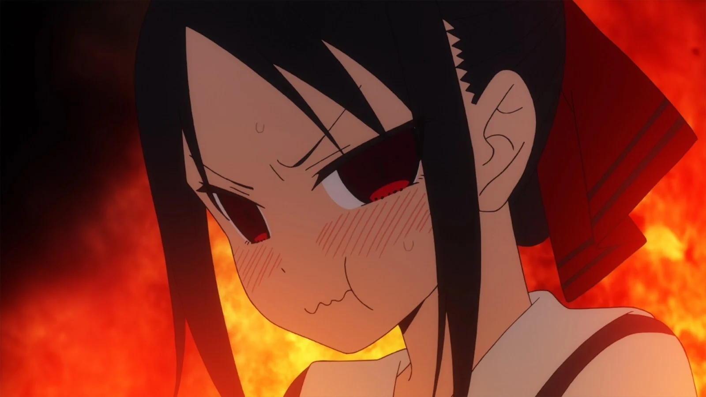
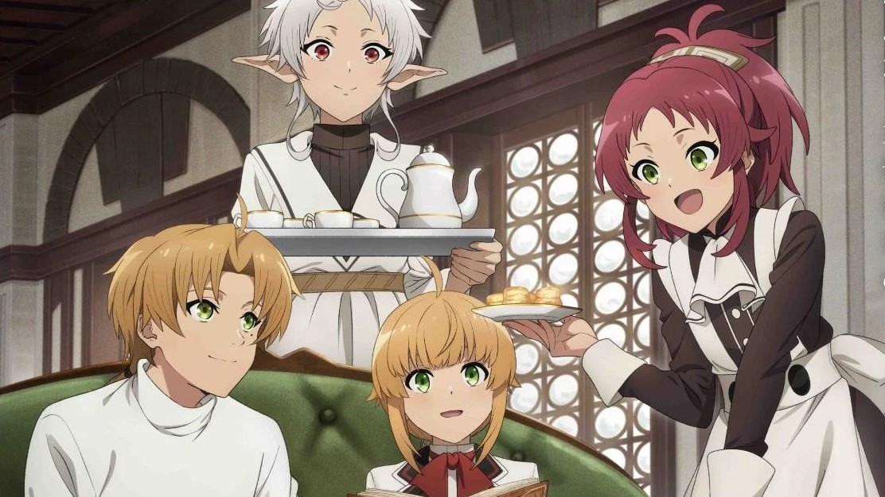

Diposting oleh: Muhamad Trias Firmansyah, 09 Mei 2024

Apa arti dari kata "Slice of life"? Jika diterjemahkan ke dalam bahasa indonesia, slice of life artinya potongan kehidupan. Dan cerita yang disajikan dari jenis genre ini yaitu mengisahkan cerita dari pengalaman yang biasa terjadi dalam kehidupan sehari-hari.Continue Reading →
DDiposting oleh: Muhamad Trias Firmansyah, 09 Mei 2024

Anime dengan genre komedi pasti menampilkan kisah yang mengundang gelak tawa dan menghibur. Umumnya, kisah yang ditampilkan berakhir bahagia dan jarang ada ketegangan. Comedy termasuk genre anime populer yang digemari banyak orang. Memiliki alur cerita yang lucu, konyol, dan nyeleneh, anime comedy sering jadi pilihan tontonan untuk melepas penat di waktu senggang. Dengan menonton anime comedy, mood yang semula buruk akan ceria kembali. Continue Reading →
Anime "Attack on Titan" merupakan salah satu anime terpopuler pada saat ini. Anime ini tidak hanya menyajikan aksi dan petualangan yang seru, tetapi juga terdapat pesan-pesan moral dan politik. Salah satu tema politik yang paling menonjol dalam Attack on Titan adalah tentang propaganda dan manipulasi sejarah. Dalam anime ini, pemerintah di Pulau Paradis menyembunyikan kebenaran tentang asal-usul Titan dan dunia di luar tembok dari rakyatnya. Hal ini dilakukan untuk menjaga stabilitas dan kekuasaan mereka.
Propaganda dan manipulasi sejarah merupakan hal yang sering terjadi di dunia nyata. Pemerintah dan pihak-pihak yang berkuasa sering menggunakan hal ini untuk melegitimasi kekuasaan mereka dan mengontrol rakyatnya. Attack on Titan mengajarkan kita untuk berhati-hati terhadap propaganda dan manipulasi sejarah. Kita harus selalu kritis terhadap informasi yang kita terima, dan tidak mudah percaya pada apa yang dikatakan oleh pemerintah atau pihak-pihak yang berkuasa. Selain propaganda dan manipulasi sejarah, Attack on Titan juga mengangkat tema-tema politik lain yang penting, seperti rasisme, imperialisme, dan perang. Anime ini menunjukkan bagaimana hal-hal tersebut dapat menyebabkan konflik dan penderitaan bagi umat manusia. Continue Reading →
Sampai dengan saat ini, Mobile Suit Gundam menjadi salah satu serial animasi dengan genre Sci-Fi favorit yang ditonton oleh banyak orang dari berbagai kalangan. Jika dicermati, sebetulnya secara garis besar konflik dalam setiap plot di berbagai serialnya hampir selalu sama, yaitu adanya perbedaan kepentingan antara koloni bumi dan luar angkasa, sampai akhirnya menghasilkan peperangan di antara kedua belah pihak. Selebihnya, paling-paling hanya serial Gundam Mobile Suit Build Diver yang fokus ceritanya ada pada gunpla builder, yang merakit gunpla impiannya untuk bertarung di suatu kompetisi.
Sebagai penonton setia berbagai serial Mobile Suit Gundam, bagi saya, tidak semua plotnya diceritakan secara sederhana. Bahkan, beberapa di antaranya punya konflik yang disajikan tergolong berat dan cukup rumit. Saya pribadi merasakan bahwa Mobile Suit Gundam punya sisi klise tersendiri bagaimana pun alur ceritanya. Continue Reading →

Kamu suka romance yang tidak mainstream? Serial ini jawabannya! Serial ini menceritakan kisah Miyuki Shirogane dan Kaguya Shinomiya yaitu seorang Ketua OSIS dan Wakil Ketua OSIS yang amat sangat romantis. Tentu sebagai serial anime yang menarik buat ditonton, kamu harus mengetahui terlebih dahulu soal Kaguya Sama Love Is War.
Ada beberapa pembahasan menarik kenapa Kaguya Sama Love Is War wajib sekali untuk ditonton. Penasaran apa saja? Berikut adalah pembahasan lengkapnya soal kenapa serial anime ini menarik untuk ditonton dan wajib buat kamu yang suka romantis.Continue Reading →

Mushoku Tensei: Jobless Reincarnation, disingkat Mushoku Tensei, adalah seri light novel dari Jepang yang ditulis oleh Rifujin na Magonote dengan menghadirkan ilustrasi yang dibuat oleh Shirotaka. Serial ini cukup sukses dan digemari banyak orang karena menghadirkan tema isekai yang cukup unik.
Saking suksesnya, serial ini juga diadaptasi menjadi versi manga dan animenya. Apakah kamu penasaran dengan Mushoku Tensei? Kali ini kita akan membahas segala hal yang harus kamu tahu tentang anime Mushoku Tensei. Kira-kira apa saja ya fakta uniknya? Continue Reading →